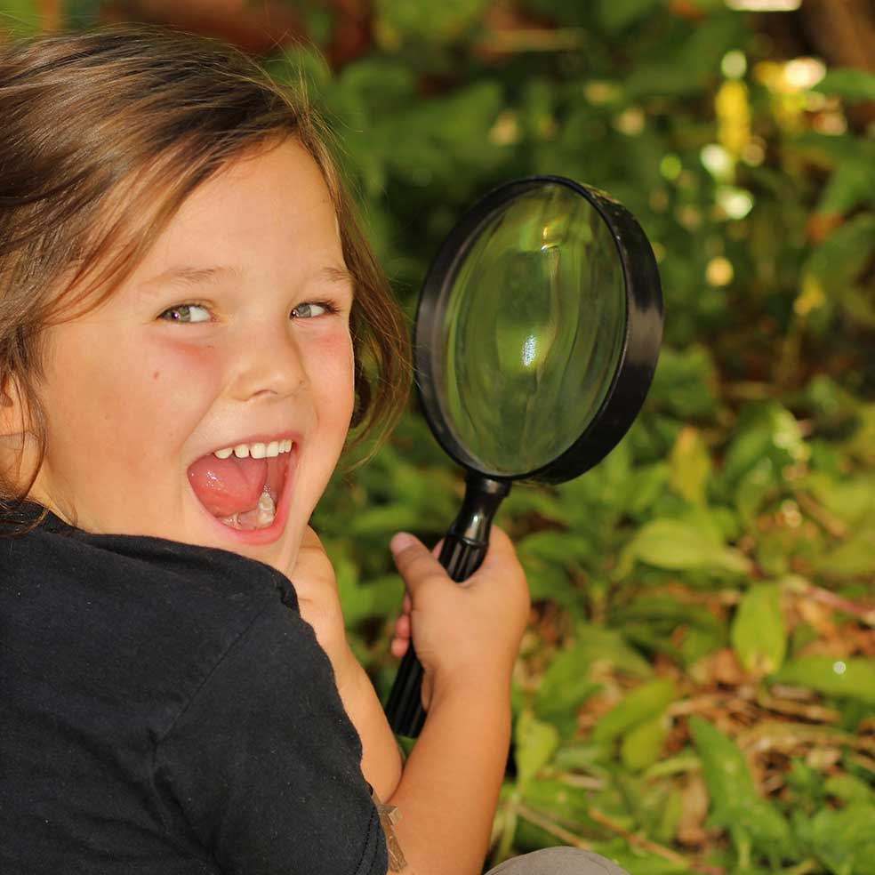

Visit CSM
Location
The museum is located at Science Lane, 0467 Oslo.
Admission
The entrance is free for all.
There are guided tours of the museum that leave every hour. These tours are 70 NOK per person and include a handy printed guide of the museum.
If you would like to organise a guided tour for your group of 6 or more people, please contact us to arrange the tour.
Hours
Monday: Closed
Tuesday – Thursday: 10 – 16
Friday: 10 – 19
Saturday: 9–16
Sunday: 9 – 13
For kids

Are you a young person looking to learn more about science? Come on down to our museum, there’s plenty to see and do.
You can learn about Newtonian physics from our bumper swing, or why not travel back in time and meet our resident Woolly Mammoth? Our exhibits are designed to be accessible for interested minds, so make sure you come ready to learn and explore.
During the school holidays we run special holiday clubs where you can join other children your age to go on a journey of discovery. Each holiday we pick a new theme to explore. To find out more about the holiday club and how you can join, send us a message.
The young star club
Join the Young Stars club! We meets once a week on Saturday between 10:00 and 13:00. Here you'll get to explore and experiment with our team of experts. See you there!
For teachers

As a community-driven museum, we want to work with schools to create places of learning and exploring. Our team are on hand to give your students guided tours of the museum, teach them in our learning laboratory, and provide great video presentations that will excite and inspire them.
Please get in touch with us here to find out more about our facilities and to arrange a time to bring your students through for a visit.
Researchers

Are you looking to get involved with our team of researchers and academics? Our museum offers various ways for you to use our resources and contribute towards them. We have online records, laboratory space, and a working relationship with a number of universities around the country.
Accessibility
The museum has wheelchair accessibility ramps. It also has audio guides and braille display signs for the visually impaired.
Food and drink
There is a café attached to the museum where you can get light lunches, soft drinks, coffee, snacks and more.
Shop
Our shop offers a range of memorabilia from the museum as well as great gifts and activity packs that allow you to continue to explore science even after you’ve left the museum.